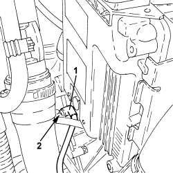
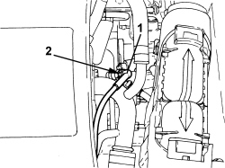
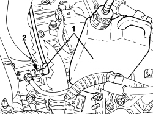

0010T67 HYDRAULIC CLUTCH SYSTEM - BLEED AIR
- Path
- Procedures > 00 MAINTENANCE > 0010 NEW VEHICLES AND MAINTENANCE > 0010T VEHICLE FLUIDS > 0010T67 HYDRAULIC CLUTCH SYSTEM - BLEED AIR
- Kind
- repair procedure (removal / refitting; the operation number is the code)
- Applies to
- all engines; all production periods
- Interactive page
- https://sloeber94.github.io/elrnDB-aBrrSpdr/en/#/946001767
Applies to: engines: 2.2 JTS; all production periods
1. Remove the brake/clutch fluid reservoir cap and connect the appropriate equipment to the reservoir.

Applies to: engines: 2.2 JTS; all production periods
1. Remove the protective plug and connect the bleed recovery device (pipe and reservoir) to the clutch hydraulic actuator.
2. Open the bleed valve on the clutch hydraulic actuator.

Applies to: engines: 2.2 JTS; all production periods
- Open the fluid reservoir tap slowly.
- Wait for all the air in the clutch release hydraulic system to escape completely.
- Close the bleed valve on the clutch slave cylinder and refit the protective cap in its housing.
- Remove the collection device.
- Remove the bleed equipment.
- Check that the clutch disengages and that the gears engage properly.
- Check that the fluid level in the brake-clutch reservoir is correct.
Applies to: engines: 3.2 JTS; all production periods
1. Remove the brake/clutch fluid reservoir cap and connect the appropriate equipment to the reservoir.
Applies to: engines: 3.2 JTS; all production periods
1. Remove the protective plug and connect the bleed recovery device (pipe and reservoir) to the clutch hydraulic actuator.
2. Open the bleed valve on the clutch hydraulic actuator.

Applies to: engines: 3.2 JTS; all production periods
- Open the fluid reservoir tap slowly.
- Wait for all the air in the clutch release hydraulic system to escape completely.
- Close the bleed valve on the clutch slave cylinder and refit the protective cap in its housing.
- Remove the collection device.
- Remove the bleed equipment.
- Check that the clutch disengages and that the gears engage properly.
- Check that the fluid level in the brake-clutch fluid reservoir is correct.
Applies to: engines: 2.4 JTD 20v; all production periods
Op. 5530B52 BATTERY SUPPORT/DRIP TRAY - R.R
1. Remove the brake/clutch fluid reservoir cap and connect suitable equipment to the reservoir.
Applies to: engines: 2.4 JTD 20v; all production periods
1. Remove the protective plug and connect the bleed recovery device (pipe and reservoir) to the clutch hydraulic actuator.
2. Open the bleed valve on the clutch hydraulic actuator.

Applies to: engines: 2.4 JTD 20v; all production periods
- Open the fluid reservoir tap slowly.
- Wait for all the air in the clutch release hydraulic system to escape completely.
- Close the bleed valve on the clutch slave cylinder and refit the protective cap in its seat.
- Remove the collection device.
- Remove the bleed equipment.
Op. 5530B52 BATTERY SUPPORT/DRIP TRAY - R.R
- Check that the clutch disengages and that the gears engage properly.
- Check the fluid level in the brake-clutch reservoir is correct.
Topics linked from this page (2)
Topics that link to this page (11)
- E001 CLUTCH NOT RELEASING CORRECTLY
- E010 CLUTCH PEDAL HARDENING
- 1004B10 POWER UNIT WITH MANUAL GEARBOX - R.R
- 1820B20 MASTER CYLINDER (PUMP) - R + R
- 1820B39 HOSE FROM CLUTCH RESERVOIR TO MASTER CYLINDER - R.R. FOR RIGHT HAND DRIVE VERSIONS
- 1820B40 HOSE FROM CLUTCH RESERVOIR TO MASTER CYLINDER (PUMP) - R + R
- 1820B45 RIGID DELIVERY PIPE FROM MASTER CYLINDER (PUMP) - R.R. FOR RIGHT HAND DRIVE VERSIONS
- 1820B48 SUPPLY HOSE TO OPERATING CYLINDER - R.R.
- 1820B56 RIGID PIPE FROM VIBRATION DAMPER TO SLAVE CYLINDER - R R
- 1820B58 CLUTCH HYDRAULIC CIRCUIT VIBRATION DAMPER - R+R
- 3330B02 PEDAL ASSEMBLY - R.R